自我介绍
- 2012 / 07 入职
- 2D 和 3D 图形绘制，可视化
- EFE Data Visualization
- W3C Data Visualization Community Group
- 上次晋升：14年秋
2014 - 2015 主要负责和参与的项目
- 前端可视化项目 ECharts
- 人物图谱前端开发（14/11 - 15/03)
- ECharts-X 开发
- WebGL 框架 QTEK 的维护
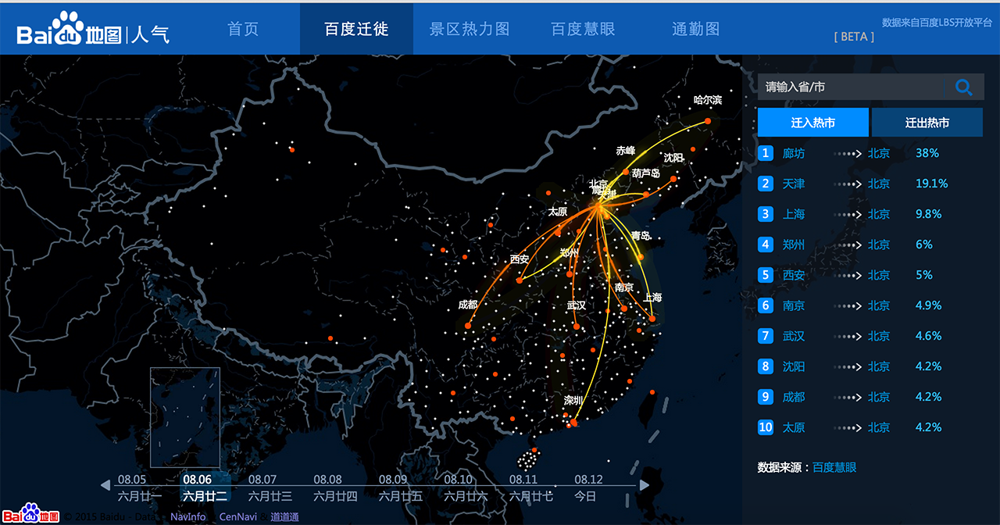
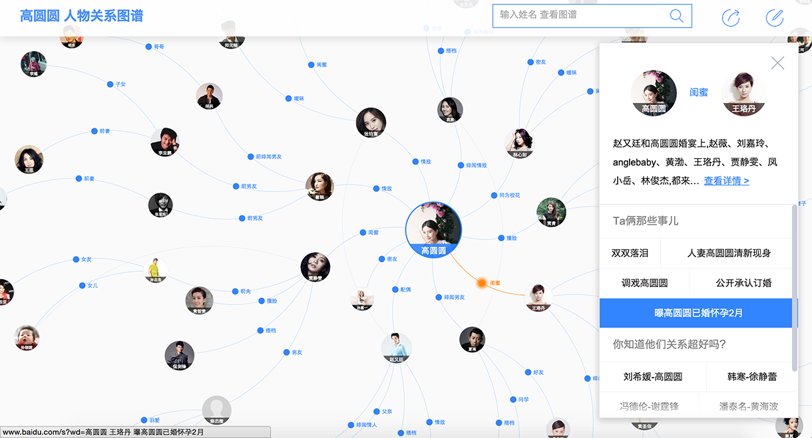
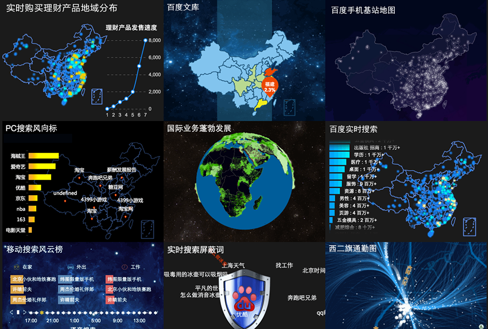
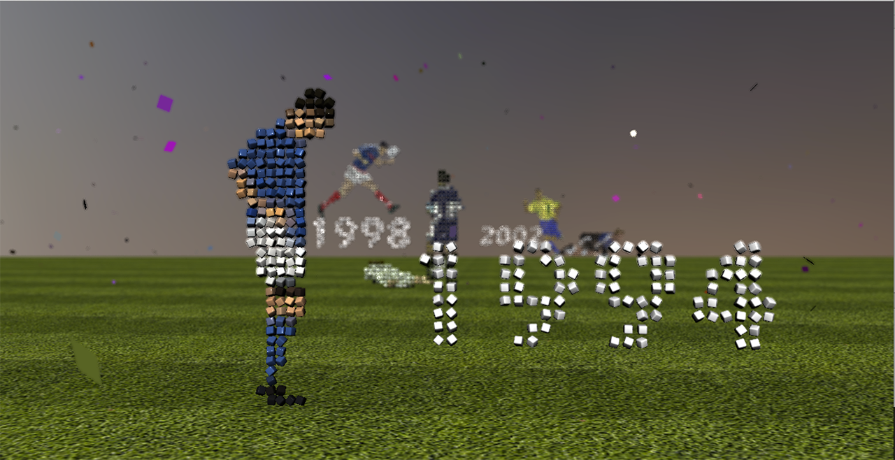
ECharts
应用 - 百度
应用 - 其它

- ZRender 维护和优化
- ECharts 维护，新图表开发
- ECharts 工具链
ZRender 优化 - 图形扩展
问题
- 图形扩展麻烦
- 复杂图形判断不精确
- 无法使用 isPointInPath
期望
- 只用关心图形形状的描述
方案
- Path2D 抽象
代理路径绘制
路径绘制数据存储
包围盒计算
相交判断
- JavaScript 精确判断点在路径上
绘制模式：Fill, Stroke
矢量路径：Bezier, Arc, Line
优点
-
性能
不用构建路径，速度是使用 isPointInPath 方式的十几倍
-
扩展方便
不用再关心如何计算包围盒和判断相交
-
只依赖路径数据
可以在 Node 上使用
性能
ZRender 优化 - 多个渲染模块
- Canvas - 高性能
分层绘制
像素操作
- SVG - 移动
服务器渲染
- VML - IE8
替代 excanvas
工具链
- 在线构建工具
对前端不熟悉的用户打包困难，默认的非 AMD 模块代码包太大
- 在线地图数据生成工具
用户觉得地图数据老旧，数据更新量大，更新频繁
- Option 索引工具
用户不知道如何查找配置项
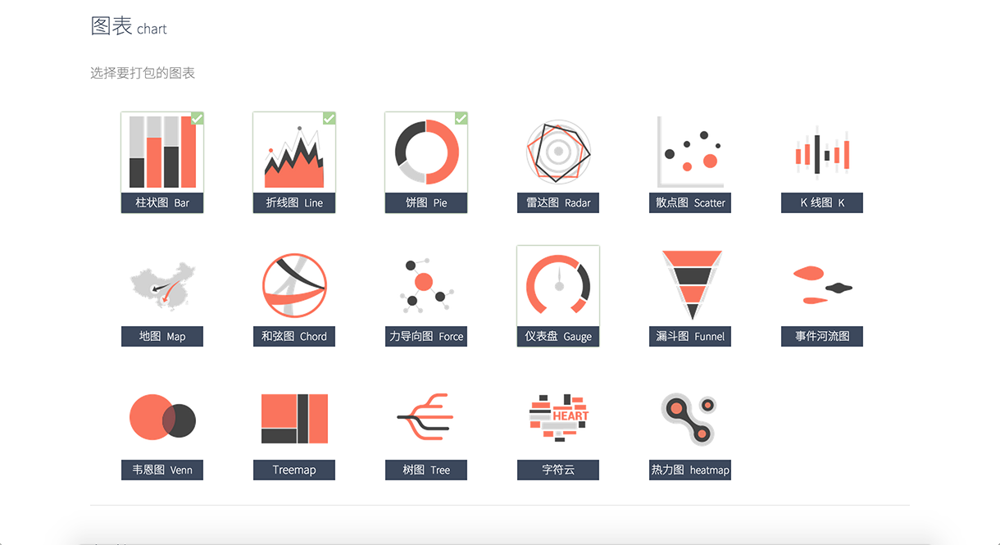
 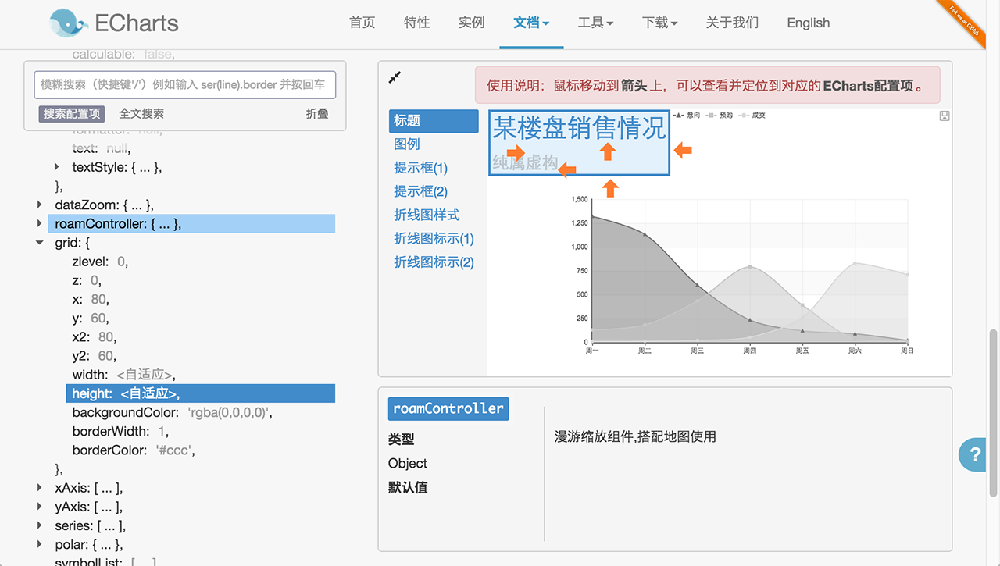
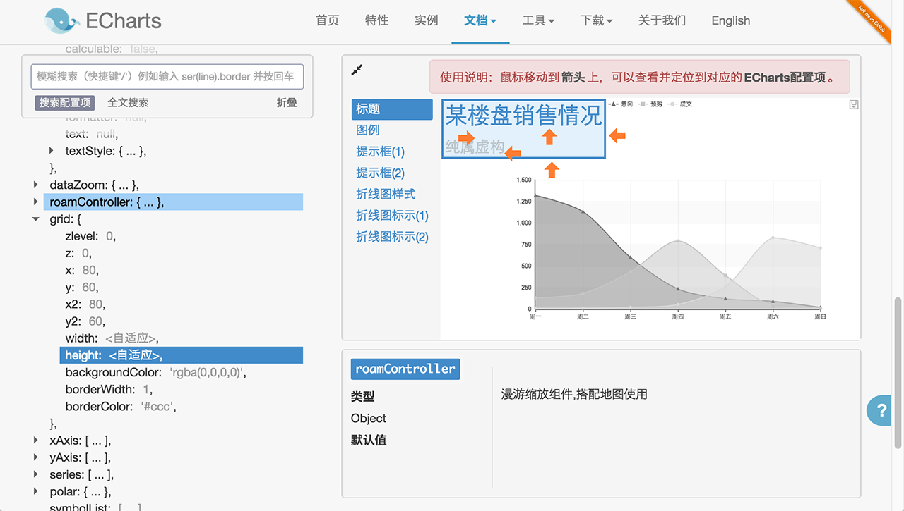
 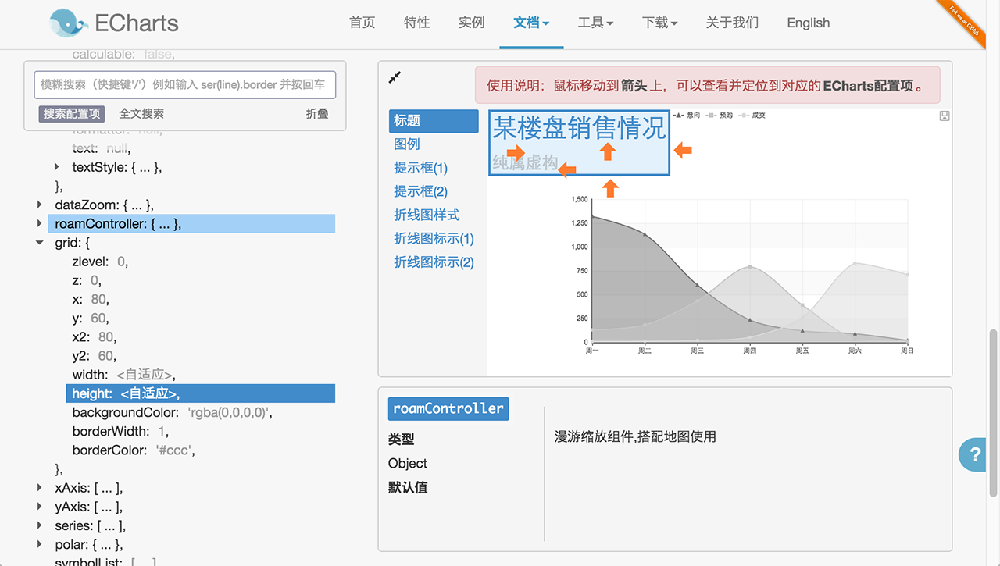
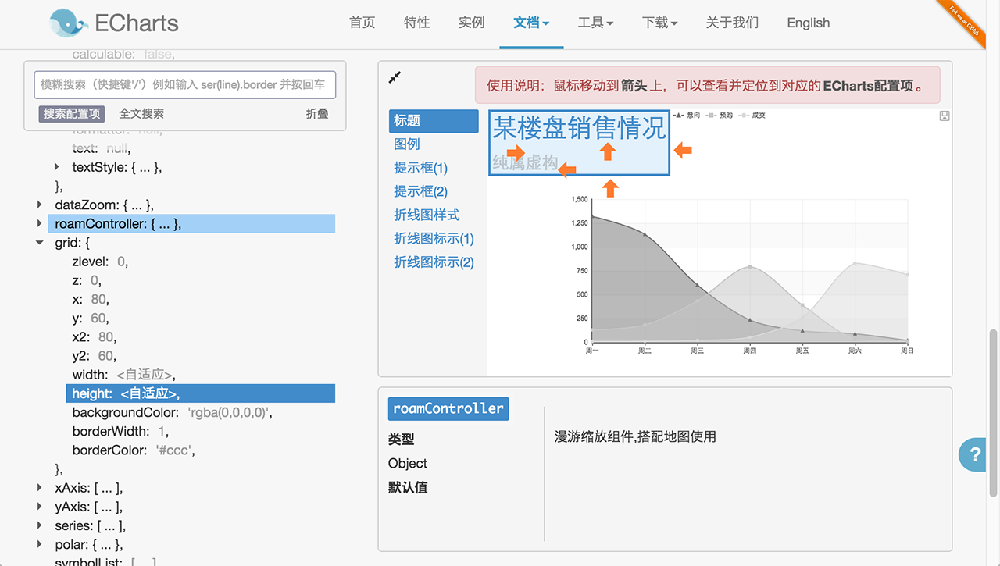
Canvas 瓶颈
-
能够实时展现的图形在千级别
Trick：像素操作
- 主要用于展现二维
ECharts-X
- 实时展现几万到几十万的数据
- 效果更吸引眼球
- 三维数据可视化
技术点
- 整合 2D 和 3D 图形的管理和绘制
- GPU 加速的动画和粒子特效
- 大数据的展现优化
- 日照信息表现
- ...
2D 和 3D 图形统一的管理
2D 和 3D 层
Canvas Surface 事件和重绘
绘制
- 2D 图形管理
- 重绘管理
交互
- 3D 射线求交
- 求出交点的纹理坐标
- 计算出在 Canvas 中的坐标
- 2D 图形拾取
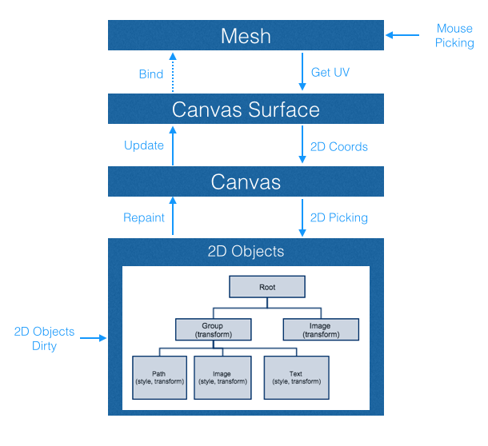
特效绘制
GPU 加速的动画
- 多个顶点模拟尾迹
- Vertex Shader 贝塞尔插值
- 17k 数据, 200k+ 顶点
GPU 加速的向量场粒子特效
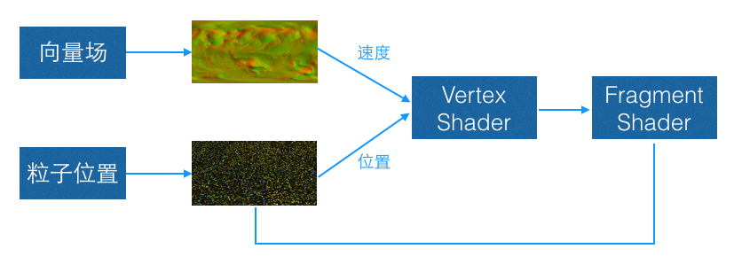日照表现
- Lambert Shading
- Bump Mapping
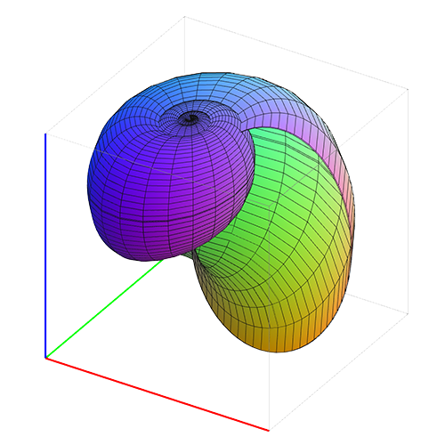Grapher.js
Wise 端数学公式的 3D 展现
-
体积控制
QTEK 模块粒度和依赖小，最后打包 150k
Three.js 400k+
- 移动端支持多浏览器
Canvas绘制3D
人物图谱
知识图谱运营产品
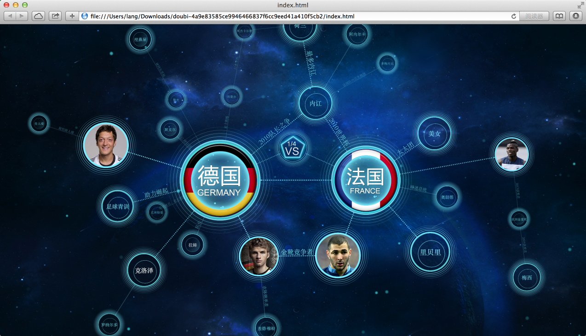 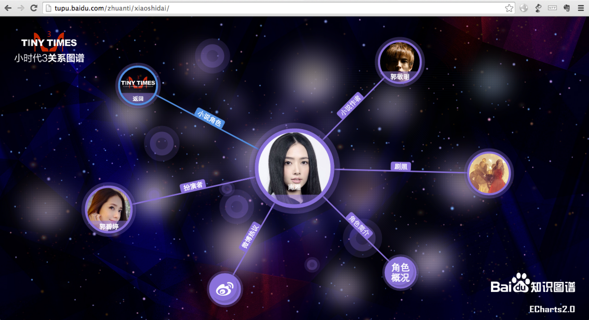 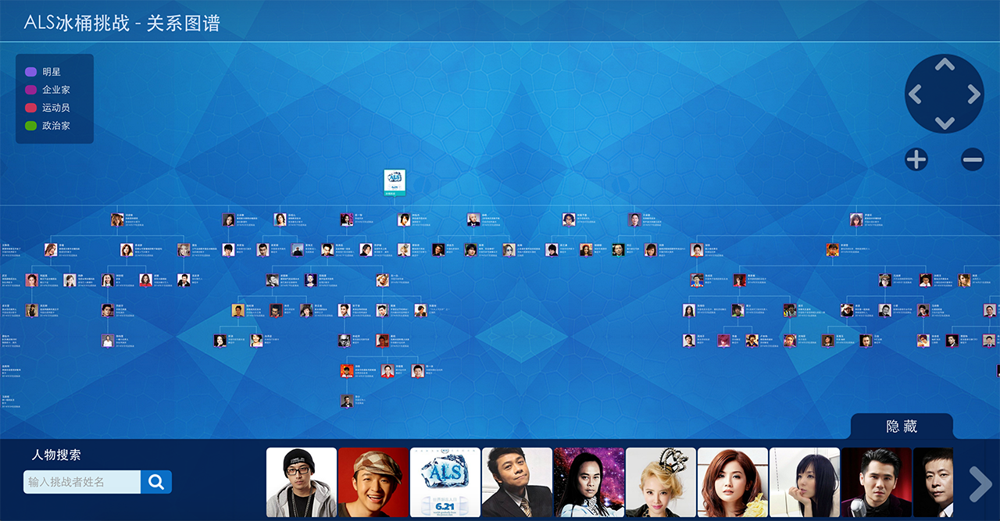通用人物图谱 - 娱乐圈人物关系的聚合展现
关键点 - 自动布局
- 分布均匀
- 辐射状的树结构
- 层级明显
- 不能有重叠
力引导布局算法优化
-
树形预布局
不同高度子树的均匀分布
-
带约束的力引导布局
层方向上的力约束
节点和边的斥力
其它细节
- 丰富的交互动画
- 优化
分层渲染
对屏幕外的图形裁剪
- 屏外节点的标签提示
搜狗的人物图谱
https://www.sogou.com/tupu/person.html?q=高圆圆